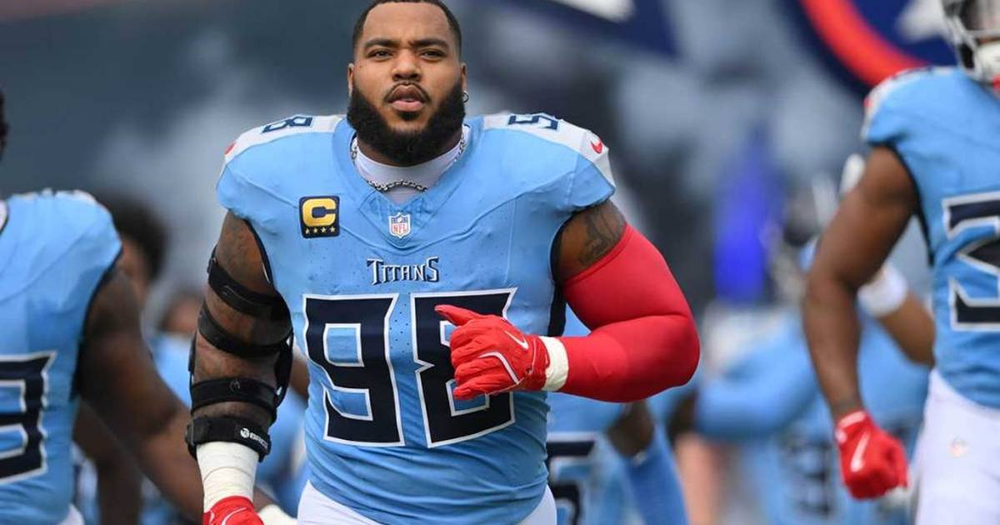

Bears Go All-In: Two First-Round Picks for Jeffery Simmons in a Blockbuster With the Titans
Chicago acquired All-Pro defensive tackle Jeffery Simmons from Tennessee for its 2027 and 2028 first-round picks plus a 2027 fourth — the first time in the common draft era a defensive tackle has fetched multiple first-rounders.

Jeffery Simmons stood in the Tennessee Titans' locker room on Wednesday and said, "As far as I know, I am going to be here." Less than 24 hours later, he was a Chicago Bear.
The Bears acquired the All-Pro defensive tackle from the Titans on Thursday in the biggest deal of the NFL trade season: Chicago sends its 2027 and 2028 first-round picks plus a 2027 fourth-rounder to Tennessee, and gets Simmons plus a 2028 fifth-round pick back. The deal is pending Simmons passing a physical.
A price never paid before
Per ESPN Research, Simmons is the first defensive tackle in the common draft era (since 1967) to be traded for multiple first-round draft picks. It is also arguably the most aggressive move of general manager Ryan Poles' tenure in Chicago — he had never dealt multiple first-rounders before.
The price tag reflects the player. Simmons, 29, is a four-time Pro Bowler and a first-team All-Pro last season, and through seven games in 2026 he led all defensive tackles in ESPN's pass-rush win rate rankings, with four sacks and 38 tackles. Four months ago, Tennessee gave him a three-year, $105.8 million extension ($100 million guaranteed) that made him the highest-paid defensive tackle in NFL history. He is under contract through 2030.
Two teams, two directions
Chicago (5-2) is going for it. The Bears sit firmly in a competitive NFC North race, and Simmons joins a defensive front that already features 12-year veteran Grady Jarrett — and reunites him with Montez Sweat, his Mississippi State teammate and fellow 2019 first-round pick.
Tennessee (1-6) is tearing it down. The Titans sit No. 2 in the 2027 draft order, and moving Simmons leaves them with $21.2 million in 2027 dead money — but also with two first-rounders in April to rebuild around. It is the Titans' second major deal of the week, after sending guard Quenton Nelson to Seattle and defensive tackle DeForest Buckner back to San Francisco.
With the November 10 trade deadline still 11 days away, the market is moving fast — and Chicago just set the price for everyone else.
Sources: TSN (ESPN report), Athlon
Gear up: Fanatics